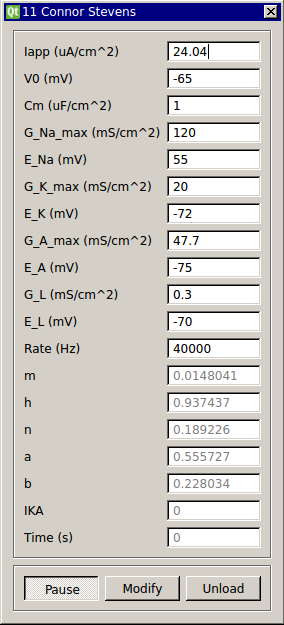

Connor-Stevens Neuron
Requirements: None
Limitations: None

The Connor Stevens model neuron is like the Hodgkin-Huxley neuron, but with slightly different kinetics for the fast sodium and potassium delayed-rectifier channels and an additional A-type potassium channel (Dayan and Abbott, Theoretical Neuroscience, Ch. 6). These changes give the Connor Stevens neuron Type I excitability such that it can achieve arbitrarily low spike rates. This feature may make this model more useful for testing custom modules than the Hodgkin-Huxley model neuron.
Input Channels
- input(0) - Iapp : applied current (A)
Output Channels
- output(0) - Vm : membrane voltage (V)
Parameters
- V0 - initial membrane voltage (mV)
- Cm - membrane capacitance (uF/cm^2)
- G_Na_max - max. Na+ conductance density (mS/cm^2)
- E_Na - Na+ reversal potential (mV)
- G_K_max - max. delayed rectifier conductance density (mS/cm^2)
- E_K - K+ reversal potential (mV)
- G_A_max - max. transient A-type K+ conductance density (mS/cm^2)
- E_A - A-type K+ reversal potential (mV)
- G_L - leak channel conductance (mS/cm^2)
- E_L - potential across leak channel (mV)
- rate - rate of integration (Hz)
States
- m - sodium activation
- h - sodium inactivation
- n - potassium inactivation
- a - A-type potassium activation
- b - A-type potassium inactivation
- IKA - A-type potassium current
- Time - time (s)